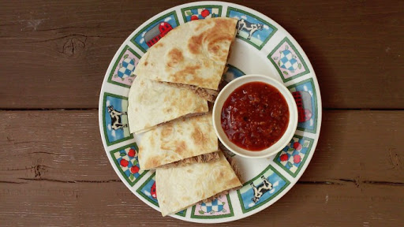

Quesdilla
Servings
1

Ingredients
- 2 large tortillas
- 1 cup of cheese
- 1 teaspoon of olive oil
Instructions
- Take out all the ingredients, a pan, a spatula, a knife, and a plate
- Put the pan on the stove with medium height
- Pour the olive oil in the pan and coat the bottom of the pan
- Place one tortilla in the pan
- Sprinkle the cheese evenly over the tortilla
- Place the other tortilla on top
- Cook until the bottom tortilla turns light, golden brown
- Flip the quesadilla over
- Cook until the bottom tortilla turns light, golden brown
- Turn off the stove and slide the tortilla onto a plate
- Cut the tortilla into slices to your liking
- Optional: Add salsa, hot sauce, guacamole, or sour cream to the side
- Enjoy the quesadilla! Perhaps even eat it while watching the sunset!